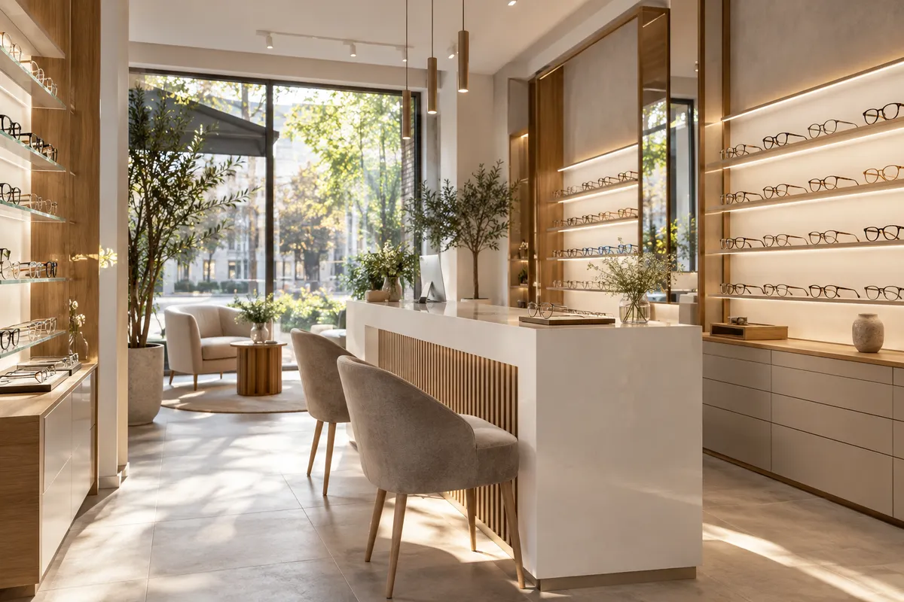
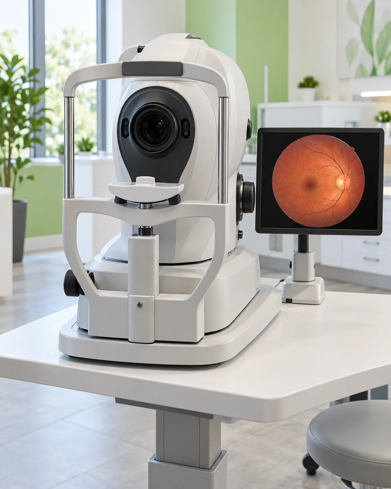

Od badania do okularów w jednym miejscu
Gabinet okulistyczny i salon optyczny przy Piotrkowskiej 172/180 w Łodzi. Okulistka, optometrystka i oprawy premium pod jednym adresem.
 zdjęcie poglądowe
zdjęcie poglądowe
5,0średnia ocen okulistki na ZnanyLekarz
223opinie pacjentów (stan na 19.10.2026)

zdjęcie poglądoweOptyk Piotrkowska
Salon optyczny z gabinetem okulistycznym w samym centrum Łodzi. Wzrok bada optometrystka, zdrowie oka ocenia okulistka, a okulary dobieramy dopiero wtedy, gdy wiemy, co dzieje się z okiem.
Na miejscu diagnostyka jaskry badaniem GDx PRO, dobór soczewek kontaktowych i szkieł progresywnych oraz oprawy kilkunastu marek.
Zapoznaj się z naszymi usługami
- Badanie wzroku100 zł
 Wizyta u okulisty200 zł, sob. 250 zł
Wizyta u okulisty200 zł, sob. 250 zł- Diagnostyka jaskry GDx PRO
 Dobór soczewek kontaktowych200 zł
Dobór soczewek kontaktowych200 zł- Badanie kierowców180 zł
- Badanie okresowe do pracy180 zł
 Konsultacja okulistyczna dzieci200 zł, sob. 250 zł
Konsultacja okulistyczna dzieci200 zł, sob. 250 zł- Szkła progresywne
 Oprawy i marki
Oprawy i marki- Okulary dla dzieci
Ceny z cennika gabinetu na optykpiotrkowska.pl/gabinet. [do potwierdzenia przed publikacją]
 zdjęcie poglądowe
zdjęcie poglądowe
Jak wygląda badanie wzroku
Badanie prowadzi optometrystka. Wizyta u okulistki i diagnostyka jaskry to osobne wizyty.
Etap I
Rozmowa
Jak pracujesz, ile czasu spędzasz przy ekranie, co Ci przeszkadza w obecnych okularach.
Etap II
Komputerowe badanie wzroku
Autorefraktometr mierzy wadę w kilka sekund. To punkt wyjścia, nie gotowa recepta.
Etap III
Ostrość do dali i do bliży
Foropter, kaseta szkieł próbnych i tablica: porównujesz szkła, aż obraz jest ostry i wygodny.
Etap IV
Ocena przedniej części oka
Lampa szczelinowa. Jeśli coś budzi wątpliwości, proponujemy osobną wizytę u okulistki.
Etap V
Szkła i oprawa
Dobieramy rodzaj szkieł do Twojego dnia, potem oprawę, która na nie pasuje.
Badanie pod kątem doboru okularów: 100 zł. Soczewki kontaktowe zdejmij co najmniej godzinę przed badaniem.
My w liczbach
- 223
- opinie o naszej okulistce na ZnanyLekarz
- 5,0
- średnia ocen
- 2
- specjalistki: okulistka i optometrystka
- 10 min
- trwa badanie GDx PRO
zdjęcie poglądowe
Okulary i soczewki
Szkła progresywne
Jedne okulary do patrzenia daleko, na ekran i do czytania. Jedyny w Łodzi salon partnerski Essilor Varilux [do potwierdzenia].
Zapytaj o progresyOkulary do pracy przy ekranie
Dla osób, które wiele godzin patrzą na monitor. Dobór po badaniu wzroku.
Jak wygląda badanieSoczewki kontaktowe
Dobór, nauka zakładania i soczewki systematycznej wymiany zamawiane w salonie, także progresywne.
Umów dobórOkulary przeciwsłoneczne
Także z korekcją, w oprawach marek z naszego salonu.
Zobacz markiOprawy premium
Kilkanaście marek, od włoskich opraw z tytanu po klasyki mody.
Poznaj TREE SpectaclesOkulary dla dzieci
Lekkie, elastyczne oprawy i szkła odporne na upadki.
Optyk dla dzieci
 zdjęcie poglądowe
Optyk dla dzieci
zdjęcie poglądowe
Optyk dla dzieci
Oprawy w naszym salonie
- TREE Spectacles
- Carolina Herrera
- BOSS
- HUGO
- Carrera
- David Beckham
- Love Moschino
- Dolce&Gabbana
- Andy Wolf
- Karavan Kids
Lista marek do potwierdzenia z salonem.
Co piszą pacjenci
[miejsce na opinię pacjenta z ZnanyLekarz]
[miejsce na opinię pacjenta z ZnanyLekarz]
Skontaktuj się z nami
- Adres
- ul. Piotrkowska 172/180, lok. 4U, Łódź
- Telefon
- 42 630 28 30 · 780 063 682
- Salon
- pon.–pt. 10:00–18:00, sob. 10:00–14:00
- Okulistka
- [dni i godziny gabinetu]
 zdjęcie poglądowe
zdjęcie poglądowe